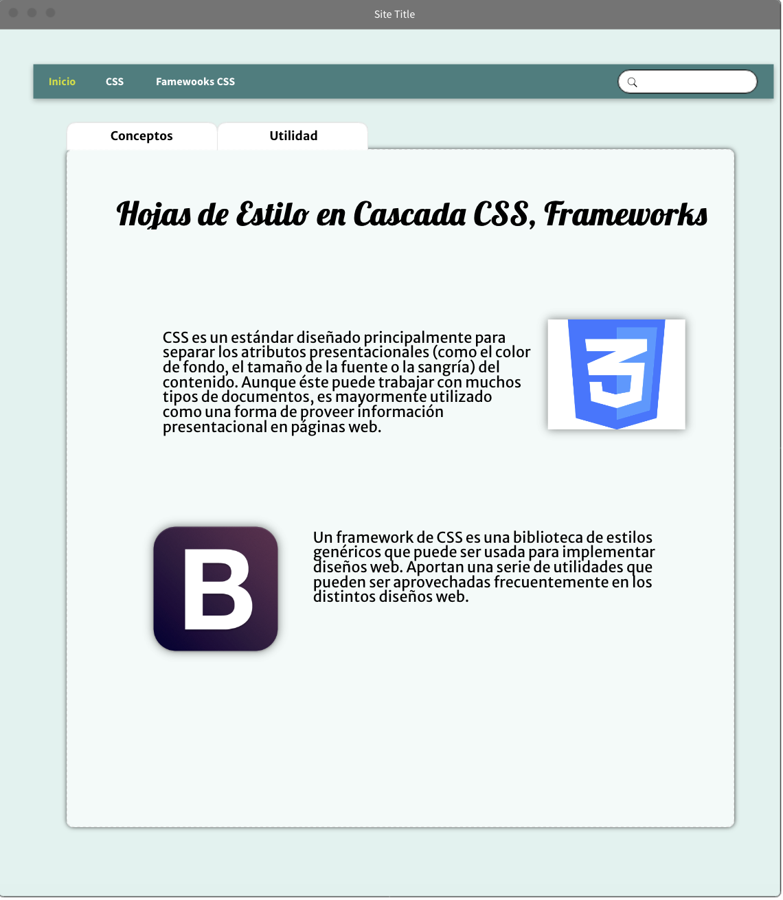

En este sitio se enseñaran los usos y funcionalidades, por ello, serán explicadas cada una de las etiquetas CSS y se mostrara un ejemplo de cada una de ellas. También se proveerá información sobre los diferentes Frameworks css que existen, sus ventajas, su instalación y su uso adecuado.
